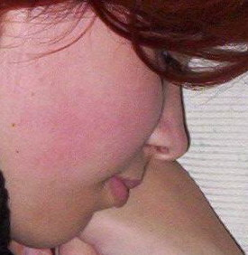
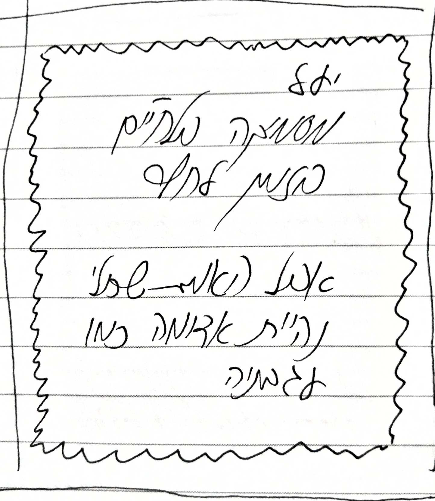
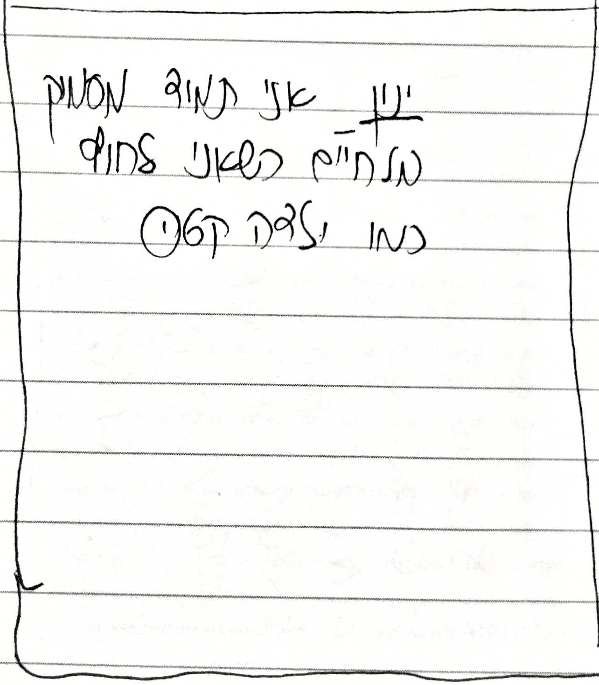
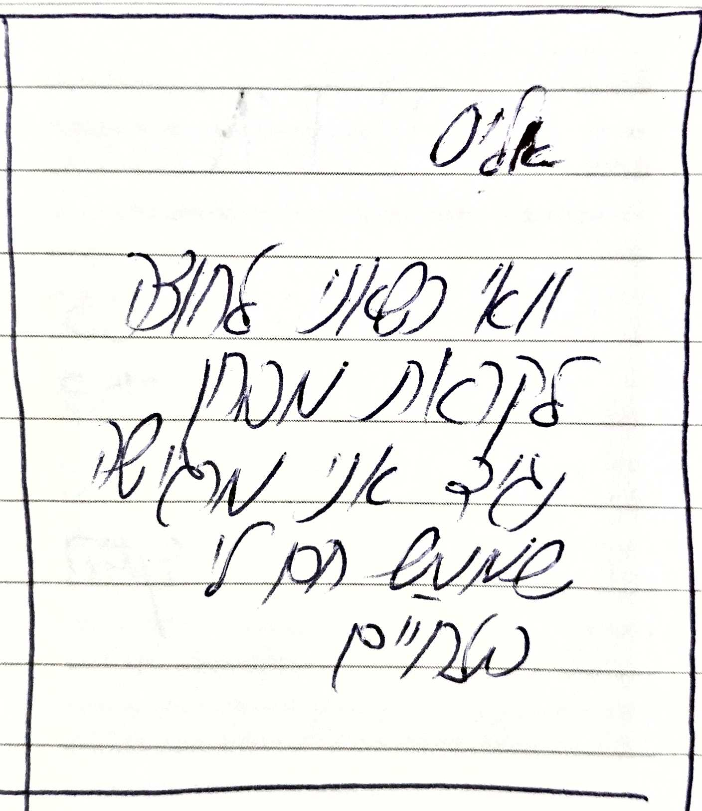

לחיים
לחי (לחיים) הוא האזור בפנים המכסה את הפה.
מבחינה אנטומית, הלחיים נמצאות בין עצם הלחי לבין הלסת התחתונה.
הן נמצאות מתחת לארובת העין ובין האף והאוזן הימנית או השמאלית, בכל אחד מצדי הפנים.
בבסיס לפעולת הלחיים שריר, שריר המחצצר, המסייע בפתיחת וסגירת הפה ובלעיסה.
השריר מכוסה בעור כלפי חוץ; וכלפי פני הפה בקרום רירי של חלל הפה.



